본문 바로가기
울산광역시시각장애인복지관 유튜브채널 바로가기-새창
사단법인 울산광역시시각장애인복지연합회 울산광역시시각장애인복지관 로고
로그인
회원가입
사이트맵
복지관안내
인사말
운영철학
연혁
시설현황
이용안내
이용자인권
조직구성
복지관 C.I
오시는길
프로그램안내
지역중심지원팀
사람중심지원팀
사회참여지원팀
기획운영지원팀
평생교육지원팀
프로그램 시간표
행사일정표
시각장애인의 이해
시각장애의 정의
시각장애인 안내법
점자란?
점자일람표
보조공학기기
건강지압안마실
음성정보서비스
점역인쇄사업
음성(오디오북)도서목록
음성정보서비스 (ARS)
후원/자원봉사
자원봉사안내 및 신청
후원안내 및 신청
후원금/품 관리현황
복지자료실
소식지
모바일 소식지
재활정보
지역정보
복지시책
울산시정뉴스 유튜브
게시판
공지사항
계약정보
사이버상담 및 이용자 건의
갤러리
복지관뉴스
팝업존
점심메뉴
로그인
회원가입
비밀번호찾기
사이트맵
개인정보취급방침
이메일무단수집거부
팝업존
팝업존 롤링 정지
팝업존 롤링 시작
팝업존1
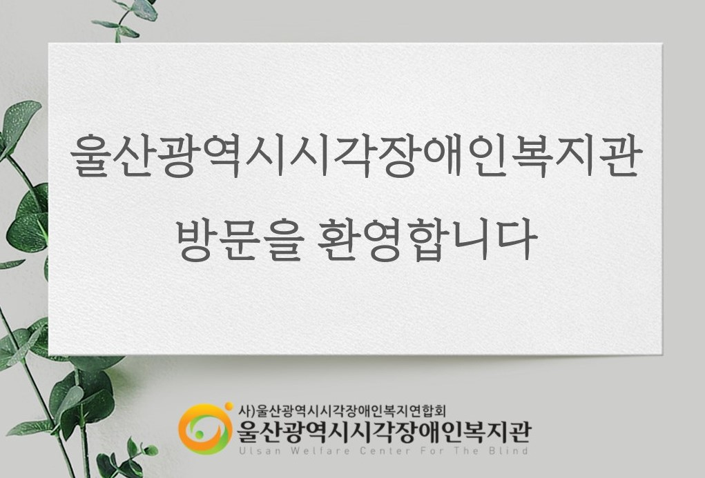
공지사항
[공고] 2026년 울산광역시시각장애인복지관 식자재구매 입찰공고(단가계약)
11/11
[안내] 2025년 제4차 이용자참여위원회 회의 결과 안내
11/07
[모집] 고려아연지원사업 「우리집 헬스 메이트」 참여자 모집
11/04
[종료] 2025년 『전문상담』 신청 안내
10/29
[종료] DB손해보험 사랑나눔봉사 “Dream Book” 신청 안내
10/28
재활정보
2025년 11월 둘째주 주간장애계 뉴스 모음
11/11
2025년 11월 첫째주 주간장애계 뉴스 모음
11/03
2025년 10월 다섯째주 주간장애계 뉴스 모음
10/27
2025년 10월 넷째주 주간장애계 뉴스 모음
10/20
2025년 10월 셋째주 주간장애계 뉴스 모음
10/13
문의하기
인터뷰 문의
11/11
친절 상담 감사합니다.
11/06
문의드려요
10/30
수업 문의
09/30
안녕하세요
09/25
포토갤러리
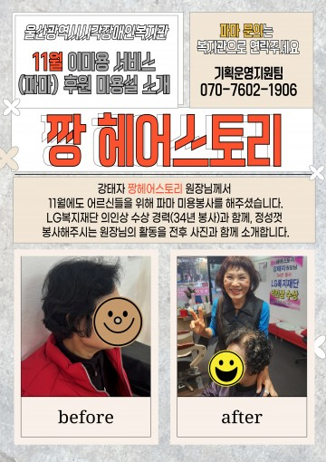
11월 이미용(파마)_짱헤어스토리
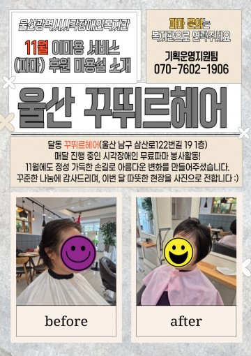
11월 이미용(파마)_달동꾸띄르 헤어
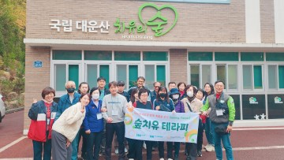
이수봉사단과 함께 계절을 보다 3차 숲치유테라피 진행
프로그램 시간표
프로그램 시간표를 확인하세요.
자원봉사 및 후원문의
사랑의 빛을 나누어요
점심메뉴
이번주 점심메뉴를 확인하세요
행사일정표
이번달 행사를 확인하세요
오시는 길
복지관에 오시는 방법
유관기관
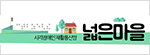
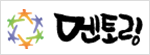
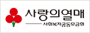
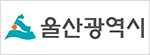
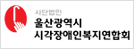
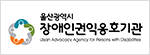
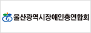
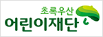
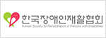